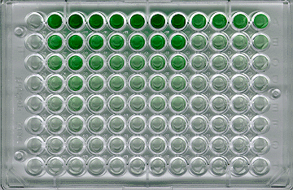

ELISA Activity
The ELISA
| An HIV ELISA, sometimes called an HIV enzyme immunoassay (EIA) is the first and most basic test to determine if an individual is positive for a selected pathogen, such as HIV. The test is performed in a 8 cm x 12 cm plastic plate which contains an 8 x 12 matrix of 96 wells, each of which are about 1 cm high and 0.7 cm in diameter. The next page illustrates how an HIV ELISA is performed. |
An ELISA plate



The University of Arizona
Thursday, January 21, 1998
Contact the Development Team
http://biology.arizona.edu
All contents copyright © 1998. All rights reserved.